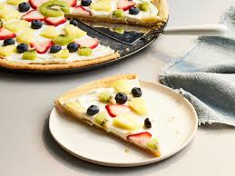

Fruit Pizza

Pictured is a slice of fruit pizza.
Ingredients
- 1 16.5 oz roll of sugar cookie dough
- 1 8 oz package of cream cheese
- 1/3 cup of sugar
- 1/2 teaspoon vanilla
- 2 kiwifruit, peeled, halved lengthwise, and sliced
- 1 cup halved or quartered strawberries
- 1 cup blueberries
- 1 cup apple jelly
Steps
- Heat oven to 350°F.
- Spray 12-inch pizza pan with cooking spray.
- Break up cookie dough in pan; press dough evenly in bottom of pan to within 1/2 inch of edge.
- Bake 16 to 20 minutes or until golden brown.
- Cool completely on cooling rack, about 30 minutes.
- In small bowl, beat cream cheese, sugar and vanilla with electric mixer on medium speed until fluffy.
- Spread mixture over cooled crust.
- Arrange fruit over cream cheese.
- Stir jelly until smooth; spoon or brush over fruit.
- Refrigerate until chilled, at least 1 hour.
- To serve, cut into wedges or squares.
- Cover and refrigerate any remaining pizza.
Home